Canonical rule sections and human weapon types. Source base: 4060074a. Open images to read full resolution. Keep this HTML beside images/; no internet is required.
The performance portion stops without a speculative fix: one exact DA/SM ratio is 1.516355, above 1.5. The old multi-second stall was not reproduced or diagnosed.
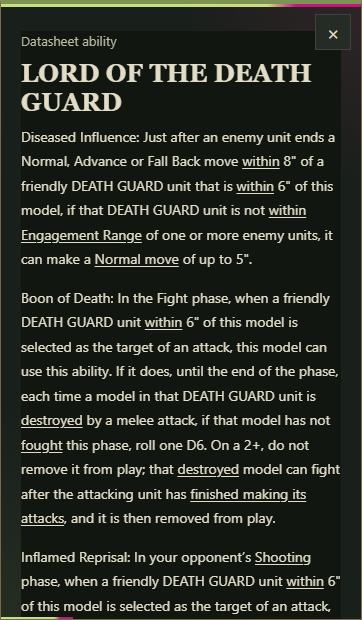
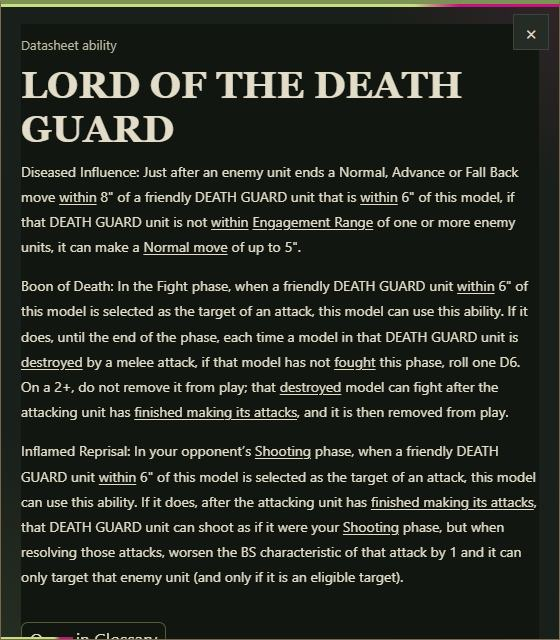
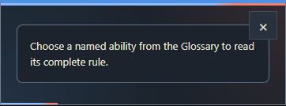
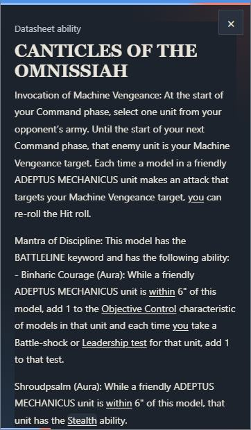
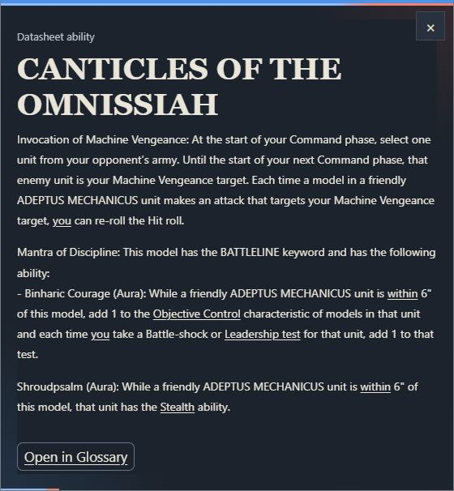
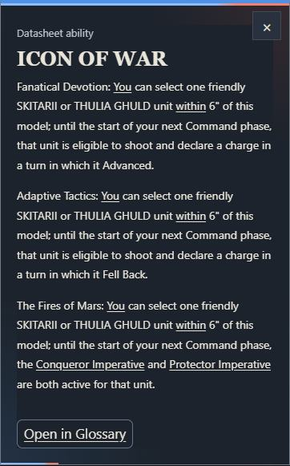
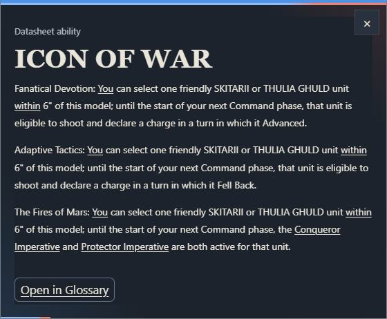
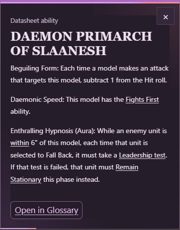
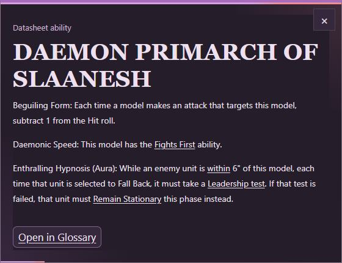
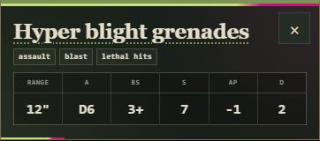
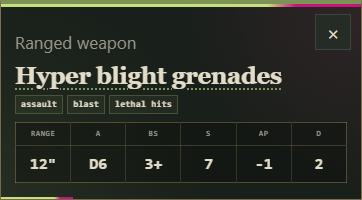
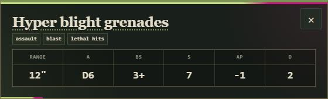
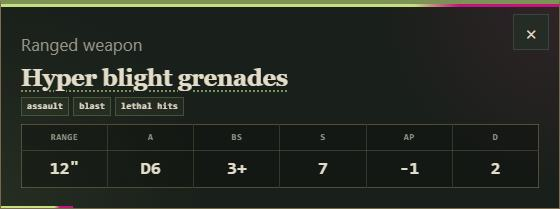
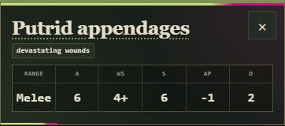
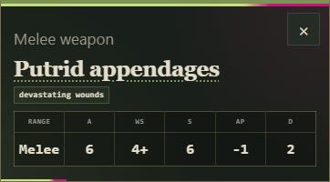
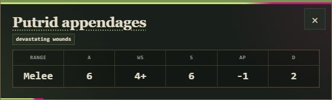
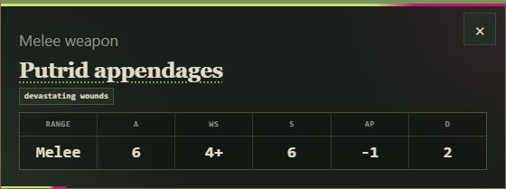
Fresh profiles, sequential actual UI clicks, 390/1440. These inputs have different card compositions; see REPORT.md for source hashes, counts, scope and the slowest Performance trace. No performance code was changed.
| Width | Slot | DA ms | SM ms | DG ms | DA / SM | ≤1.5 |
|---|---|---|---|---|---|---|
| 390 | 1 | 45.200 | 55.200 | 51.100 | 0.818841 | PASS |
| 390 | 2 | 51.400 | 41.900 | 39.600 | 1.226730 | PASS |
| 390 | 3 | 64.900 | 42.800 | 51.500 | 1.516355 | FAIL |
| 1440 | 1 | 47.200 | 53.900 | 52.100 | 0.875696 | PASS |
| 1440 | 2 | 55.100 | 43.300 | 41.300 | 1.272517 | PASS |
| 1440 | 3 | 65.000 | 45.200 | 52.800 | 1.438053 | PASS |